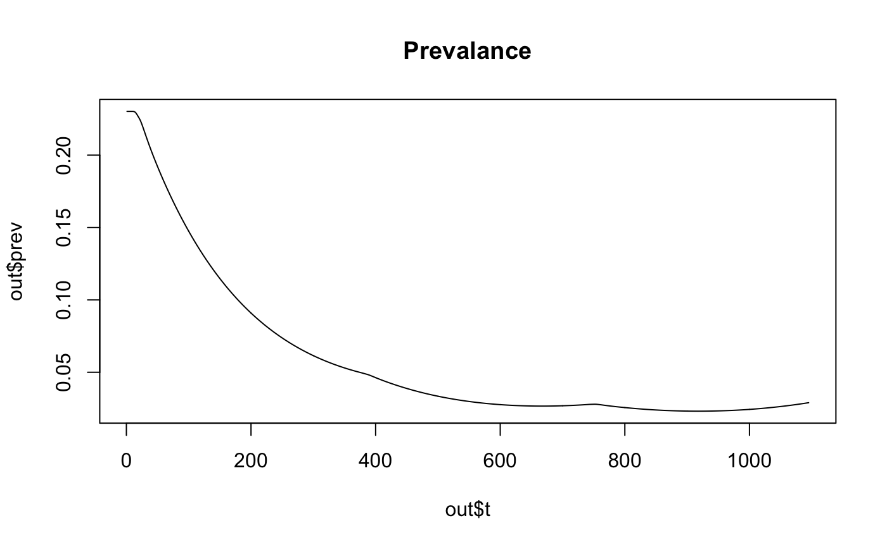
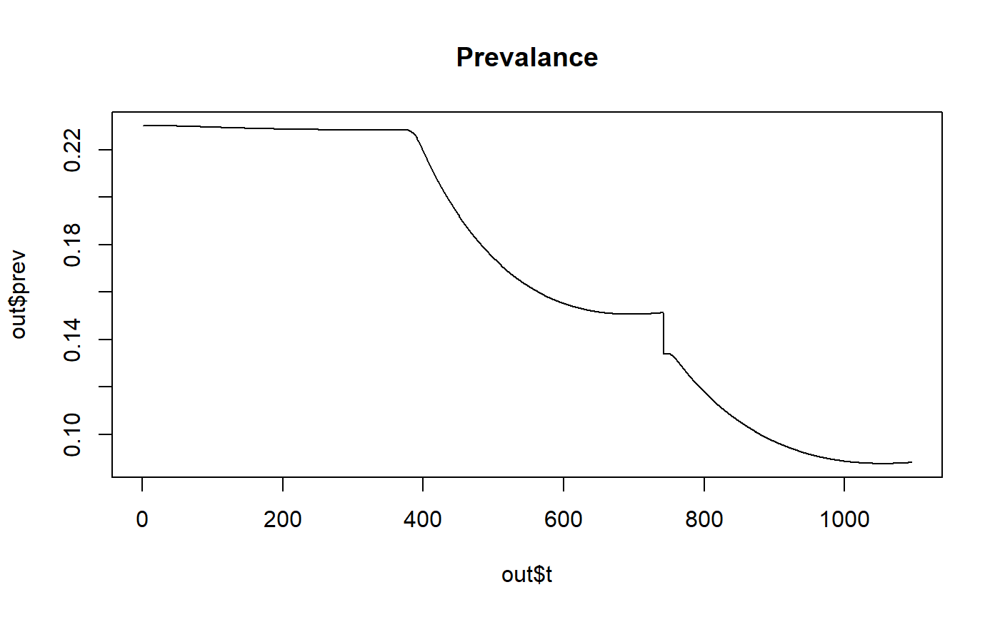

Adding ITNs and IRS
H. Juliette T. Unwin
2019-05-24
intro_to_nets.RmdIntroduction
Insecticide treated nets (ITNs) and Indoor Residual Spraying (IRS) can be added to the default deterministic Imperial Malaria model easily. As in the original Berkeley Madonna code, which can be found in the wiki here, the impact of four different interventions can be considered. This is implemented by splitting the population into a maximum of four different compartments:
- People with no intervention coverage.
- People with only ITNs.
- People with only IRS.
- People with both ITNs and IRS.
Each of these compartments is then modelled separately, with all contributing to a share force of infection from humans to mosquitoes.
The population can be split in the following ways:
- In the
odin_model.Rmodel, the population is split according to the following equation whereitn_covis the percentage of the population who use nets andirs_covis the percentage of the population who use indoor residual spraying.
itn_cov = 0.5
irs_cov = 0.5
cov <- c((1 - itn_cov) * (1 - irs_cov), itn_cov * (1 - irs_cov), (1 - itn_cov) * irs_cov, itn_cov * irs_cov)- In the
odin_model_itn.Rthere are two ways to split the population.A vector can be provided to the function
create_r_model, which specifies the proportion of people in each intervention compartment and sums to one. It is important to maintain the order: people with no intervention coverage, people with only ITNs, people with only IRS and people with both ITNs and IRS. If there is no IRS in the simulation, only two compartments need to be specified. At present, a
percentage of the population has to be assigned to ITNs if IRS is included in the model. For example, for a 50% split of no coverage of ITNs and IRS the following vector is provided:pop_split = c(0.5, 0.5).If no coverage vector is provided, then population is split by default. If a vector of varying
coverages is provided, the population is split equally between all the active population groups.
Implementation of interventions
There are two different ways of implementing these intervention.
- Allow a step change in ITNs and IRS at a prescribed time.
- Vary ITNs over the time period being considered and allow a step change in IRS which corresponds to the time nets are first introduced.
Step change in interventions
These interventions can be switched on in the odin_model.R model by providing a start time for the interventions and the percentage of people who are covered. For example, for a non seasonal location with a 50% coverage of nets and 50% coverage of IRS that gets turned on after one year:
library(hanojoel)
# creates the odin model
wh <- hanojoel:::create_r_model(odin_model_path = system.file("extdata/odin_model.R",
package = "hanojoel"),
num_int = 4,
itn_cov = 0.5, # ITN coverage
irs_cov = 0.5, # IRS coverage
ITN_IRS_on = 1*365) # Start time for interventions
# generates model functions with initial state data
mod <- wh$generator(user= wh$state, use_dde = TRUE)
# Runs the model
mod_run <- mod$run(t = 1:(365*3))
out <- mod$transform_variables(mod_run)
plot(out$t, out$prev, type='l', col='black', main='Prevalance')
If no start time for interventions is provided, the default is to set ITN_IRS_on = -1. This represents the inteventions being implemented from the start of the simulation.
library(hanojoel)
# creates the odin model
wh <- hanojoel:::create_r_model(odin_model_path = system.file("extdata/odin_model.R",
package = "hanojoel"),
num_int = 4,
itn_cov = 0.5, # ITN coverage
irs_cov = 0.5) # IRS coverage) # Start time for interventions
# generates model functions with initial state data
mod <- wh$generator(user= wh$state, use_dde = TRUE)
# Runs the model
mod_run <- mod$run(t = 1:(365*3))
out <- mod$transform_variables(mod_run)
plot(out$t, out$prev, type='l', col='black', main='Prevalance')
Varying interventions
It may be desirable to change the net coverage more than once over a simulation. This is achieved by providing two vectors itn_vector and t_vector to the create_r_model function using the odin_model_itn.R version of the model. Here the itn_vector vector dictates how the coverage changes and t_vector is the time in days that the coverages change. For example for a non seasonal setting with 50% population split:
library(hanojoel)
# define the net coverage.
# Need to define the coverage in the past so can have a coverage using the delay
itn_vector <- c(0, 0.1, 0.3)
t_vector <- c(-25, 1*365, 2*365) # number of days at which the itn coverage changes
# creates the odin model
wh <- hanojoel:::create_r_model(odin_model_path = system.file("extdata/odin_model_itn.R",
package = "hanojoel"),
num_int = 2,
itn_vector = itn_vector,
t_vector = t_vector,
pop_split = c(0.5, 0.5))
# generates model functions with initial state data
mod <- wh$generator(user= wh$state, use_dde = TRUE)
# Runs the model
mod_run <- mod$run(t = 1:(365*3))
out <- mod$transform_variables(mod_run)
plot(out$t, out$prev, type='l', col='black', main='Prevalance')
At present varing IRS has not been implemented. IRS can only be added to the simulation as shown below:
library(hanojoel)
# define the net coverage.
itn_vector <- c(0, 0.1, 0.3)
t_vector <- c(-25, 1*365, 2*365) # number of days at which the itn coverage changes
# creates the odin model
wh <- hanojoel:::create_r_model(odin_model_path = system.file("extdata/odin_model_itn.R",
package = "hanojoel"),
num_int = 4,
itn_vector = itn_vector,
t_vector = t_vector,
irs_cov = 0.2,
pop_split = c(0.25, 0.25, 0.25, 0.25))
# generates model functions with initial state data
mod <- wh$generator(user= wh$state, use_dde = TRUE)
# Runs the model
mod_run <- mod$run(t = 1:(365*3))
out <- mod$transform_variables(mod_run)
plot(out$t, out$prev, type='l', col='black', main='Prevalance')
This represents 20% of the population recieving IRS beginning at day 365.